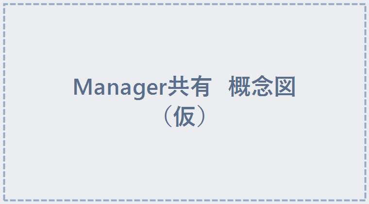

STEP 2 / 5
設置手順（3ステップ）
- unitypackage をインポート
ワールドのプロジェクトを開いた状態で、.unitypackageをダブルクリック →「Import」。 - ピンバッジのセットをシーンに置く
Assets/GotchaPins/(商品名フォルダ)/ワールド用アバター追従ギミック版/の中の 追従版セット Prefab を、シーンの好きな場所にドラッグ＆ドロップ。
※ ディスプレイには最初から台紙が入っています。掴むとピンズ本体だけ外れ、台紙が展示位置に残ります。 - 管理オブジェクトを1個だけ置く ★重要
Assets/GotchaPins/Common/の中のGotchaPins_PinManagerPrefab を、シーンに1個だけドラッグ＆ドロップ。

💡 Managerはピンバッジの追従を動かす「管理役」です。シーンに1個あれば、何個ピンバッジを置いても共有されます。置くだけでシーン内のピンバッジに自動接続されます。
✅ もしManagerを置き忘れたままアップロードしようとすると、ビルド時に「管理オブジェクトが見つかりません。配置しますか？」とポップアップが出ます。「配置する」を選べばその場で自動配置・接続されます。
あとは通常どおりワールドをアップロードすれば完成です。